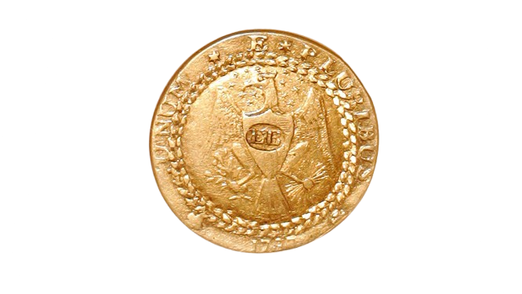
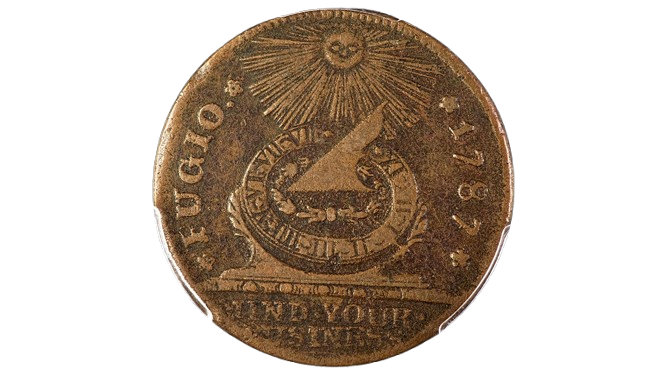
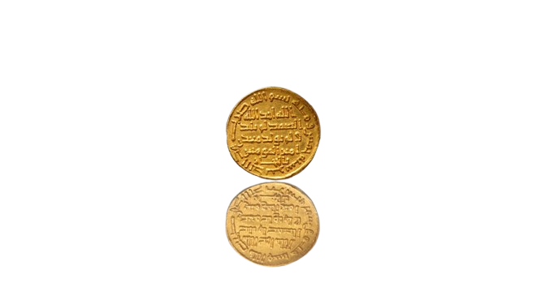
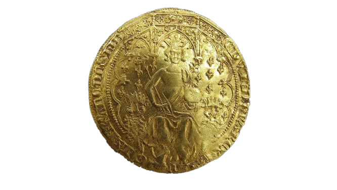
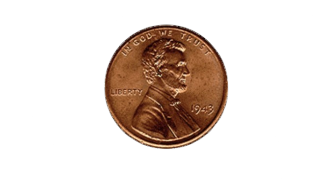
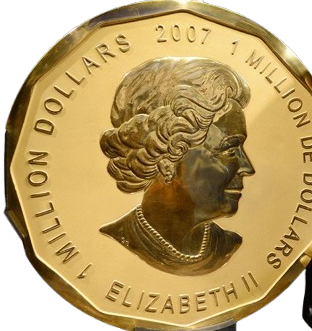
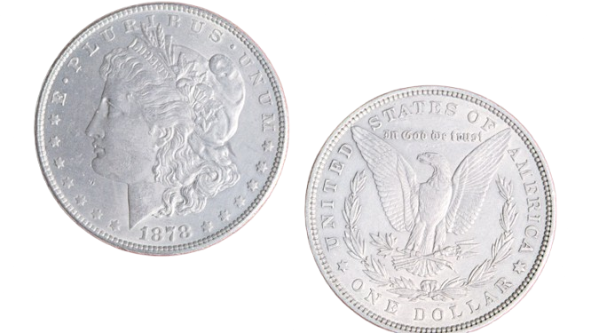
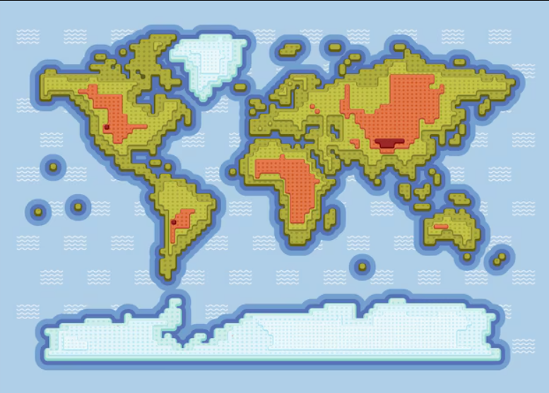

✨ Coin Collection ✨

The 1787 Brasher Doubloon

The 1787 Fugio cent

The 723 Umayyad Gold Dinar

The 1343 Edward III Florin

The 1943 Lincoln Head Copper Penny

The 2007 $1 Million Canadian Gold Maple Leaf

Morgan Silver Dollars
🌎 Explore Coins by Country

Click on a country to learn about its coins!
Choose Your Coin
🪙 Coin Toss Game 🪙
🤔
Choose Heads or Tails and toss the coin!
Current Score: 0
High Score: 0